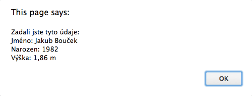

Po stisknutí tlačítka se objevilo okno s výpisem zadaných hodnot podle vzoru:

U polí mohou být definované validační pravidla, které určují formát obsahu pole. Pokud toto pravidlo je u některého pole porušeno, musí se místo výpisu hodnot zobrazit chyba: „CHYBA: Pole obsahují neplatnou hodnotu“
Tlačítko ale nesmí být možné stisknout, dokud obsah některého textového pole bude porušovat jeho validační pravidlo.
Validační pravidla se musí automaticky načítat z atributu data-format, aby při se chování změně html souboru přizpůsobilo bez změny scriptu.
Nově: Byl přidán atribut data-required, který pokud má hodnotu yes, tak vyžaduje, aby hodnota políčka nebyla prázdná.
Nově: Políčko se považuje za prázdné i když uživatel vyplní jen mezery, nebo jiné neviditelné znaky (white-space).
Nově: Pokud v políčku není hodnota vyžadována přes data-required, je prázdné políčko OK, přestože má třeba má nastavené nějaké jiná validační pravidla přes data-format (tj. validační pravidla se uplatňují, jen když ne v políčku něco napsáno).
Stejně jako v předchozí lekci smíš dělat úpravy pouze v kódu souboru script.js